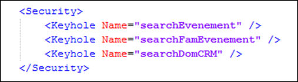

Cette section permet de définir les confidentialités du document.

La balise <keyhole> donne le nom des « serrures » associées à ce document.
Lors d’une recherche l’utilisateur verra uniquement les documents pour lesquels il a UNE « clef ».
Lorsque cette section est absente ou vide, le document est public.
La modification de cette section nécessite une réindexation totale du document concerné si l'on souhaite qu'elle s'applique à l'ensemble des documents déjà existant dans la base Search.
Dans l'exemple ci-dessus, l'utilisateur ayant la clef pour ouvrir la serrure "SearchEvenement" OU la serrure "SearchFamEvenement" OU la serrure "SearchDomCRM" verra le document concerné lors d'une recherche.
Voir l'explication détaillée de la mise en oeuvre des confidentialités.